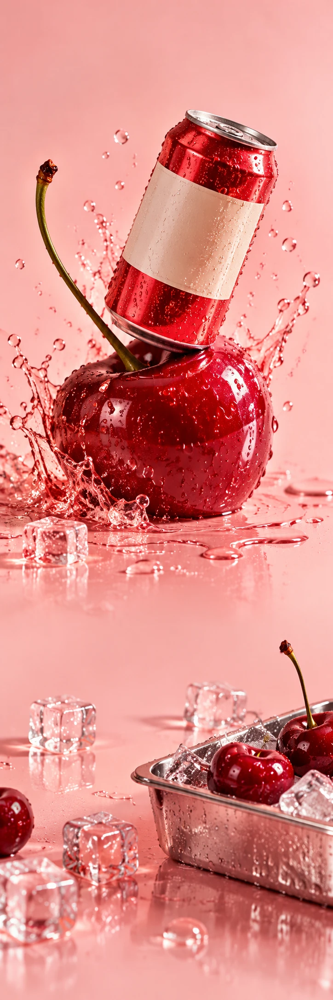

POM POM
FrisdrankSmaakcampagne
CHERRY POP HAS ENTERED THE CHAT
POP GOES
YOUR DAY.
Ontdek Cherry Pop POM POM / VAN DICHTBIJ
Zet iets
vrolijks koud.
Die eerste koude slok op een warme middag. De tinteling, de kers, het geluid van een blikje dat opengaat. Precies dat gevoel.
01Kers
02Bubbels
03IJs erbij
Good times.
On ice.
Een plop. Een slok. Een heel ander humeur.
Ontdek Cherry Pop